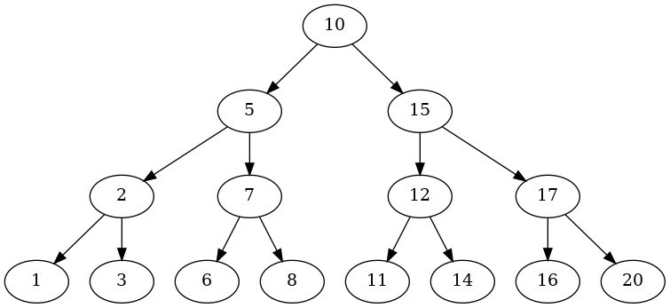

Binary Search Tree Node Insertion
Table of Contents
This is the next post in a series on Binary Search Trees that start with this post. In this post we'll be looking at creating a Tree class and the method of inserting a node into the tree.
The Tree
Although CLRS use a T (as in tree) class in their algorithms, they only use it to store a root attribute. To make it a little more object-oriented I'll create a Tree class and add the insert method to it, rather than passing the tree to a function. Not a big change, but one that might be useful.

# this project
from .node import Node
from .query import Query
class Tree:
"""Binary Search Tree
Args:
root: the root node for the tree
"""
def __init__(self, root: Node=None) -> None:
self.root = root
self._query = None
return
The Query
We have kind of a chicken and the egg problem here in that I defined the Query to contain the Tree, but we need to use its min function to delete nodes. We'll see how it goes.
@property
def query(self) -> Query:
"""A Tree Query"""
if self._query is None:
self._query = Query(self)
return self._query
The Insertion Algorithm
This is the CLRS insert algorithm. As I noted above they consider it a function, rather than a method of the tree.
One thing that tripped me up initially was the term "insert". I thought that it would put the new node in between existing nodes, but it instead adds it as a leaf. The job of the algorithm is to find the correct leaf to add the new node to and which side to put it on (left or right).
\begin{algorithm}
\caption{Insert Node}
\begin{algorithmic}
\INPUT Tree and Node to insert.
\PROCEDURE{TreeInsert}{\textit{T, z}}
\STATE \textit{y} $\gets$ \textsc{NIL}
\STATE \textit{x} $\gets$ T.root
\WHILE {\textit{x} $\neq$ \textsc{NIL}}
\STATE \textit{y} = \textit{x}
\IF {\textit{z}.key < \textit{x}.key}
\STATE \textit{x} $\gets$ \textit{x}.left
\ELSE
\STATE \textit{x} $\gets$ \textit{x}.right
\ENDIF
\ENDWHILE
\STATE
\STATE \textit{z}.parent $\gets$ \textit{y}
\STATE
\IF {\textit{y} = \textsc{NIL}}
\STATE T.root $\gets$ \textit{z}
\ELIF {\textit{z}.key < \textit{y}.key}
\STATE \textit{y}.left $\gets$ \textit{z}
\ELSE
\STATE \textit{y}.right $\gets$ \textit{z}
\ENDIF
\ENDPROCEDURE
\end{algorithmic}
\end{algorithm}
What we have here is sort of a hunter and hound scenario. The hunter y is pulled along by the hound x as the hound chases down the path to find the spot for the new node. Once the hound falls into the spot where there's no node, the hunter is in the location of the leaf that should be the new node's parent and the hound is where the new node should be inserted.
The Insert Method
def insert(self, node: Node) -> None:
"""Insert the node as a new leaf in the tree
Args:
node: a node to insert into the tree
"""
hunter, hound = None, self.root
while hound is not None:
hunter, hound = hound, hound.left if node < hound else hound.right
node.parent = hunter
if hunter is None:
self.root = node
elif node.key < hunter.key:
hunter.left = node
else:
hunter.right = node
return
from bowling.data_structures.binary_search_tree.tree import Tree
tree = Tree()
tree.insert(Node(12))
expect(tree.root).to(equal(Node(12)))
tree.insert(Node(7))
expect(tree.root.left).to(equal(Node(7)))
tree.insert(Node(20))
expect(tree.root.right).to(equal(Node(20)))
tree.insert(Node(10))
expect(tree.root.left.right).to(equal(Node(10)))
Transplant
This is an implementation of what CLRS calls Transplant (although I kind of think replace might be more to the point) where we are given two nodes - one to remove from the tree and the other to take its place. It might not seem obvious by itself why you would need it but it's used when you delete nodes.
\begin{algorithm}
\caption{Transplant Node}
\begin{algorithmic}
\INPUT Tree, Node to replace, Node to insert.
\PROCEDURE{Transplant}{\textit{T, u, v}}
\IF {\textit{u}.parent = \textsc{NIL}}
\STATE \textit{T}.root $\gets$ \textsc{v}
\ELIF {\textit{u} = \textit{u}.parent.left}
\STATE \textit{u}.parent.left = \textit{v}
\ELSE
\STATE \textit{u}.parent.right $\gets$ \textit{v}
\ENDIF
\IF {\textit{v} $\neq$ \textsc{NIL}}
\STATE \textit{v}.parent $\gets$ \textit{u}.parent
\ENDIF
\ENDPROCEDURE
\end{algorithmic}
\end{algorithm}
def transplant(self, to_be_replaced: Node, replacement: Node) -> None:
"""Replace node with another
Args:
to_be_replaced: current holder of the position to be replaced
replacement: node to replace the incumbent
"""
if to_be_replaced.parent is None:
self.root = replacement
elif to_be_replaced == to_be_replaced.parent.left:
to_be_replaced.parent.left = replacement
else:
to_be_replaced.parent.right = replacement
if replacement is not None:
replacement.parent = to_be_replaced.parent
return
root = Node(50)
tree = Tree(root)
transplant = Node(666)
tree.transplant(root, transplant)
expect(tree.root).to(be(transplant))
root = Node(50)
tree = Tree(root)
lefty = Node(25)
tree.insert(lefty)
# the transplant doesn't check the Binary Search Tree Property
# before doing its thing so we have to make sure our transplant
# is less than the parent when setting the left node
smaller_transplant = Node(32)
tree.transplant(lefty, smaller_transplant)
expect(lefty.parent.left).to(equal(smaller_transplant))
expect(smaller_transplant.parent).to(be(lefty.parent))
# similarly we need to make sure the right transplant is bigger
righty = Node(42)
tree.insert(righty)
bigger_transplant = Node(48)
tree.transplant(righty, bigger_transplant)
expect(righty.parent.right).to(equal(bigger_transplant))
expect(righty.parent).to(be(bigger_transplant.parent))
Deletion
The uses for the transplant method might seem a little obscure, but it's a necessary function for our delete method to delete a node from the tree. There are three cases (four-ish really) to take care of:
- The node to delete has no left child: transplant the right child with the node
- The node to delete has no right child: transplant the left child with the node
- The node to delete has both children: transplant the children with the node
\begin{algorithm}
\caption{Delete Node}
\begin{algorithmic}
\INPUT Tree, Node to delete.
\PROCEDURE{Delete}{\textit{T, z}}
\IF {\textit{z}.left = \textsc{NIL}}
\STATE \textsc{Transplant}(\textit{T, z, z.right})
\ELIF {\textit{z}.right = \textsc{NIL}}
\STATE \textsc{Transplant}(\textit{T, z, z.left})
\ELSE
\STATE \textit{y} $\gets$ \textsc{TreeMinimum}(\textit{z}.right)
\IF {\textit{y}.parent $\neq$ \textit{z}}
\STATE \textsc{Transplant}(\textit{T, y, y.right})
\STATE \textit{y}.right $\gets$ \textit{z}.right
\STATE \textit{y}.right.parent $\gets$ \textit{y}
\ENDIF
\STATE \textsc{Transplant}(\textit{T, z, y})
\STATE \textit{y}.left $\gets$ \textit{z}.left
\STATE \textit{y}.left.parent $\gets$ \textit{y}
\ENDIF
\ENDPROCEDURE
\end{algorithmic}
\end{algorithm}
def delete(self, node: Node) -> None:
"""Remove the node from the tree
Args:
node: node to remove from the tree
"""
if node.left is None:
self.transplant(node, node.right)
elif node.right is None:
self.transplant(node, node.left)
else:
replacement = self.query.min(node.right)
if replacement.parent != node:
self.transplant(replacement, replacement.right)
replacement.right = node.right
replacement.right.parent = replacement
self.transplant(node, replacement)
replacement.left = node.left
replacement.left.parent = replacement
return
tree = Tree(Node(50))
child = Node(25)
tree.insert(child)
left = Node(10)
right = Node(30)
tree.insert(right)
expect(tree.root.left).to(be(child))
tree.delete(child)
expect(tree.root.left).not_to(be(child))
expect(tree.root.left).to(be(right))
tree = Tree(Node(50))
child = Node(25)
tree.insert(child)
left = Node(10)
right = Node(30)
tree.insert(left)
tree.delete(child)
expect(tree.root.left).to(be(left))
root = Node(50)
tree = Tree(root)
child = Node(25)
tree.insert(child)
left = Node(10)
right = Node(30)
tree.insert(left)
tree.insert(right)
tree.delete(root)
expect(tree.root).to(be(child))
root = Node(50)
tree = Tree(root)
child = Node(25)
tree.insert(child)
left = Node(10)
right = Node(30)
tree.insert(left)
tree.insert(right)
tree.delete(child)
expect(tree.root.left).to(be(right))
Plotting
tree = Tree(Node(10))
for key in (5, 2, 3, 1, 7, 6, 8, 15, 12, 11, 14, 17, 16, 20):
tree.insert(Node(key))
adjacencies = dict()
def inorder(node: Node, adjacencies: dict) -> dict:
"""Traverse the nodes and build an adjancency dictionary
"""
if node is not None:
inorder(node.left, adjacencies)
left = node.left.key if node.left else None
right = node.right.key if node.right else None
if any((left, right)):
if left and right:
adjacencies[node.key] = (left, right)
elif left and not right:
adjacencies[node.key] = (left, )
else:
adjacencies[node.key] = (right,)
inorder(node.right, adjacencies)
return
inorder(tree.root, adjacencies=adjacencies)
print(adjacencies)
{2: (1, 3), 5: (2, 7), 7: (6, 8), 10: (5, 15), 12: (11, 14), 15: (12, 17), 17: (16, 20)}
Now that we have an adjacency list, let's try and plot it.
import networkx
SLUG = "binary-search-tree-node-insertion"
OUTPUT = f"files/posts/{SLUG}/"
graph = networkx.DiGraph(adjacencies)
pygraph = networkx.nx_pydot.to_pydot(graph)
pygraph.write_png(OUTPUT + "first_tree.png")

This is sort of an artificial example in that in order to get the plot right I had to insert nodes until they all had two (except the leaves), but it hopefully shows that it works.